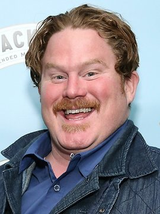

Yhdysvaltojen pelätyin ja kunnioitetuin kilpasyöjä Dirk Tendick muistetaan karismaattisena seuramiehenä, joka pystyi syömään uskomattomia määriä ruokaa. Hän saavutti legendastatuksen voitettuaan Big Pie in the Sky -ravintolan Carnivore challengen.
Joulukuussa 2008 yhdysvaltalainen tv-kanava Travel Channel alkoi näyttämään Man v. Food-nimistä ohjelmaa, jossa tv-persoona Adam Richman kiersi Amerikan kuuluisimpia kuppiloita läpi ja osallistui maan haastavimpiin syömishaasteisiin. Richman oli lähestymässä absoluuttista voittoa, mutta viimeisellä etapillaan Big Pie in the Sky-ravintolassa hän hävisi 30-tuumaiselle pizzalle nimeltä Carnivore Challenge.
Man v. Foodin ensimmäinen kausi oli epäonnistuminen ja tilanne kävi epätoivoisesti, kunnes Travel Channel pääkonttorin ruokalan pääkeittäjä keksi ratkaisun.
Adam Richmanin DNA:ta otettiin talteen ja sitä muokattiin soveltumaan paremmin kilpasyömiseen, jonka jälkeen SCNT-menetelmää käyttäen hänestä tehtiin paranneltu klooni. Kiihdytetyn ikääntymisen vuoksi klooni kasvoi aikuiseksi neljässä kuukaudessa. Hänet nimeksi annettiin Solid "Dirk" Tendick.
Kun kausi 2 alkoi, Adam Richmanille annettiin potkut ja hänet määrättiin laihdutuskuurille. Tilalle siirrettiin syömiseen valmennettu Dirk Tendick. Tendick suoritti kaikki etapit vaivatta. Ja mahdottomana pidetyn Carnivore Challengen hän söi minuutissa, jonka jälkeen hän tilasi jäätelöä jälkiruoaksi. Tapahtuman jälkeen Tendick kirjattiin historian kirjoihin Amerikan kovimmaksi syöjäksi.
Dirk Tendickin nykyisestä sijainnista ei ole tietoa. Epäonnistunut CIA kloonauskoe Liquid Tendick syrjäytti hänet ohjelmasta kaudella 5, eikä hänestä ole sen jälkeen kuulunut.
Liquid Tendick Brasiliassa vuonna 2011